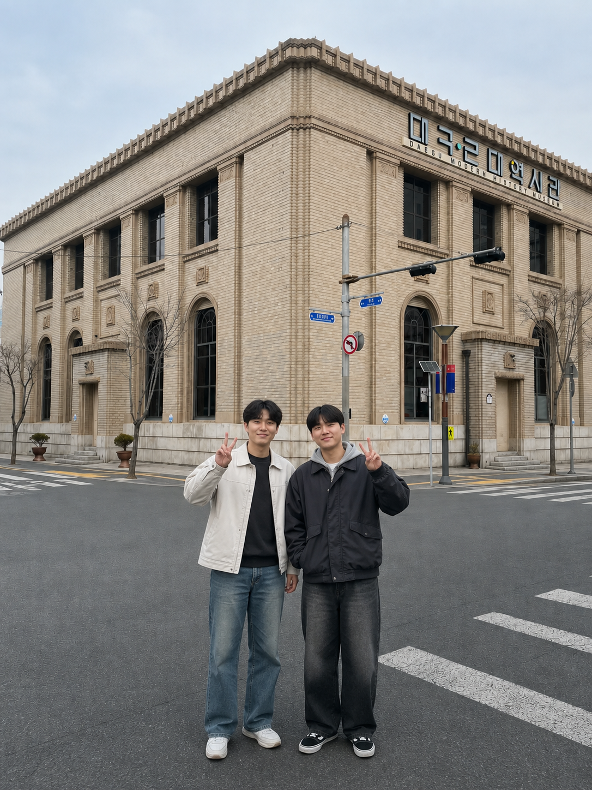
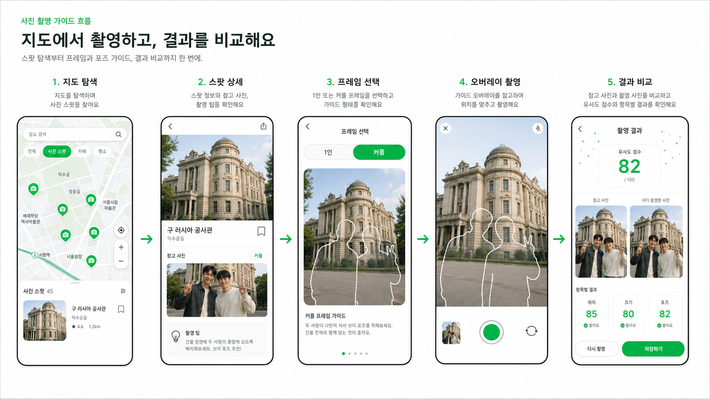
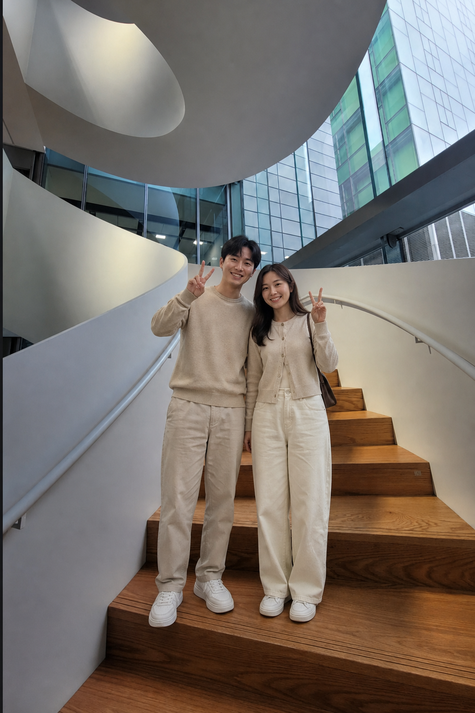
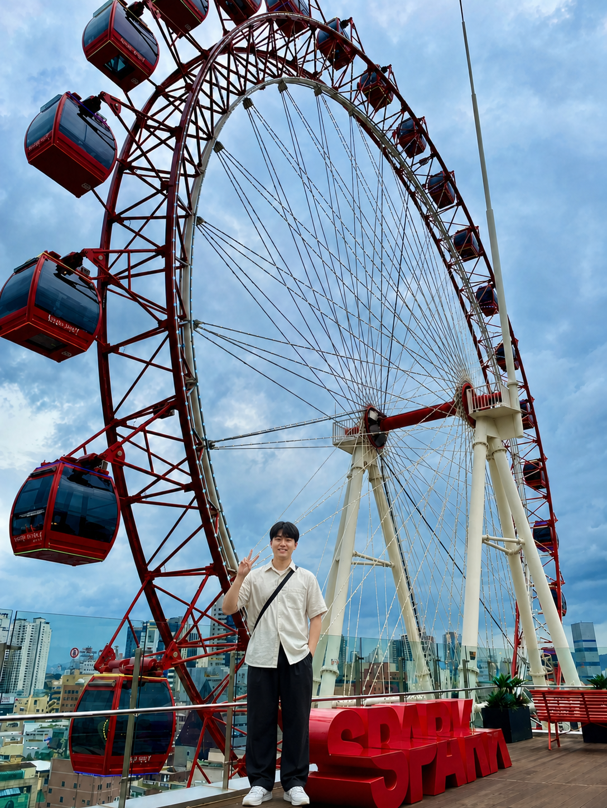
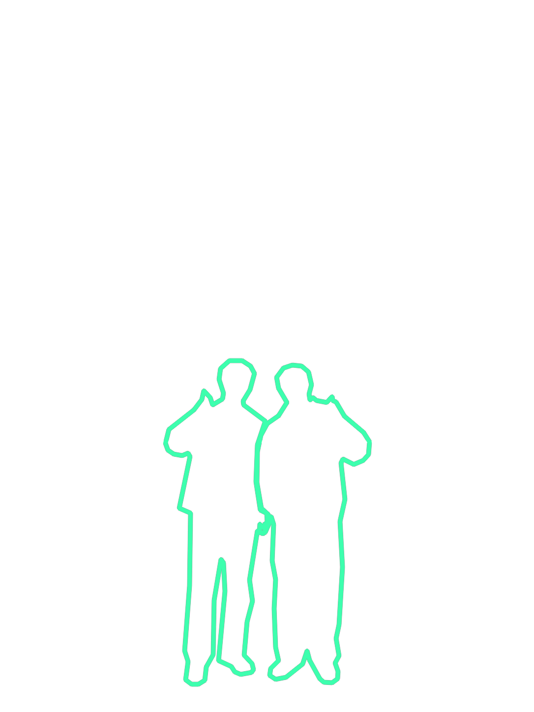
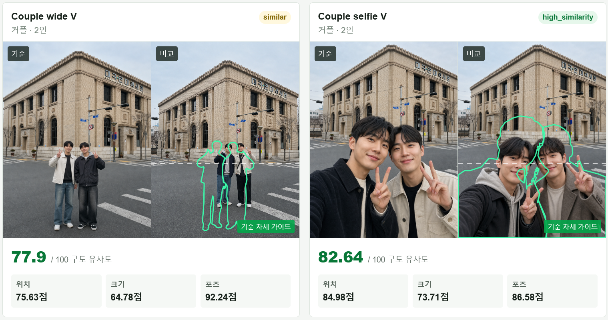

PHOTO NAVIGATION
포토 내비게이션
3주차 개발 진행사항
지도에서 구도를 찾고,
가이드를 따라 원하는 사진을 찍는 서비스
N030 김병조

PHOTO NAVIGATION · GUIDE DATA01 · 문제 정의
사람들이 어려워하는 것은
사진이 아니라 어디서 어떻게 찍을지입니다.
“SNS에서 본 그 구도, 이 장소에서는 어디에 서서 맞춰야 할까?”
PLACE장소는 찾았지만 촬영 위치를 모른다.
FRAME같은 장소여도 인물 위치와 크기가 달라진다.
GUIDE따라 할 수 있는 명확한 기준이 없다.
02 · 서비스 경험
지도 탐색부터 촬영 결과 비교까지, 하나의 흐름으로 연결

03 · 후보 포토스팟 등록
사용자가 발견한 장소도
후보 포토스팟으로 서비스에 쌓입니다.

03 · 이번 주 핵심 질문
예시 사진을 어떻게 앱에서 재사용할 수 있는
촬영 가이드 데이터로 만들까?
사진 한 장을 보여주는 것만으로는 사용자가 구도를 맞추기 어렵습니다.
따라서 사진마다 인물 배치, 인물 실루엣, 배경 대표선을 저장한 layout JSON과 투명 Overlay PNG가 필요합니다.
REFERENCE기준 예시 사진
LAYOUT JSON인물 프레임 · 실루엣 · 배경선
OVERLAY PNG카메라 위에 표시할 촬영 가이드
04 · Overlay Agent
예시 사진을 분석하고, 사람이 승인 가능한
촬영 레이아웃으로 바꾸는 Agent
01 INPUT장소별
예시 사진 업로드
예시 사진 업로드
02 YOLO POSE인원 수와
인물 배치 추출
인물 배치 추출
03 SAM2전체 인물
실루엣 보조
실루엣 보조
04 REVIEW관리자가
배경 대표선 검수
배경 대표선 검수
05 OUTPUTlayout JSON
Overlay PNG 저장
Overlay PNG 저장
YOLO Pose는 인물 배치, SAM2는 인물 실루엣, 관리자는 배경 대표선을 담당합니다.
05 / 1305 · Agent가 만든 초기 데이터
3개 장소, 30장 사진으로
포토스팟 프레임 데이터를 만들었습니다.


PLACE네이버 1784 계단 · 스파크랜드 관람차 · 대구 근대역사관
POSE장소별 커플 3개, 개인 2개 구도
PAIR각 구도는 기준 사진과 비교 사진의 쌍으로 생성
ASSET사진 30장 · layout JSON 30개 · Overlay PNG 30개
06 · 인물 레이아웃 결과
얼굴을 평가하지 않고,
사진 속 인물의 전체 배치를 가이드로 만듭니다.
기준 사진 + 인물 실루엣

WHAT WE KEEP머리·어깨·팔·몸통·다리의 화면 속 위치와 크기
WHAT WE EXCLUDE얼굴 이목구비, 표정, 의상처럼 개인을 식별할 수 있는 세부 정보
WHY자세 교정이 아니라 “이 사진처럼 어디에 서면 되는가”를 안내하기 위해서
07 · 관리자 배경선 편집
자동 분석이 애매한 배경은
사람이 대표선만 직접 등록합니다.
SELECT기준 사진과 기존 layout을 불러옵니다.
DRAW계단·건물·관람차 등 대표선 최대 5개를 등록합니다.
SAVE수정한 layout JSON과 Overlay PNG를 같은 ID로 저장합니다.
{
"backgroundLines": [
{
"id": "line_uuid",
"start": [0.18, 0.30],
"end": [0.82, 0.30]
}
]
}이미지 해상도와 무관한 0~1 좌표를 사용하고, 선 ID는 UUID로 고정해 수정·삭제 뒤에도 유지합니다.
08 / 1308 · 실제 구도 비교 결과
같은 장소에서 같은 구도를 시도한 두 사진을
인물 배치 기준으로 비교했습니다.

커플 전신 V · 77.9점 · 위치 75.63점 · 크기 64.78점 · 포즈 92.24점커플 셀카 V · 82.64점 · 위치 84.98점 · 크기 73.71점 · 포즈 86.58점
09 / 1309 · 구도 비교 방식
기준 사진은 저장하고,
사용자가 찍은 사진만 새로 분석합니다.
REFERENCE승인된 layout JSON 재사용
CAPTURE촬영 사진만 YOLO Pose + SAM2 분석
COMPARE인물 배치 60% + 배경선 40%
인물 배치 60%화면 위치, 프레임 크기, 공통 포즈 키포인트를 비교합니다.
배경선 40%인물 영역을 제외하고 대표선 주변만 ORB/RANSAC으로 비교합니다.
예외 처리특징점이나 inlier가 부족하면 점수를 억지로 만들지 않고 재촬영을 안내합니다.
10 · 배경선 40%는 무엇을 비교하는가
인물 뒤의 장소가 같은 위치에 있는지도
대표선 주변만 좁게 확인합니다.
01 SELECT등록한 대표선관리자가 계단 난간, 건물 모서리, 관람차 테두리처럼 구도를 잡는 선을 최대 5개 저장합니다.
02 MASK인물 영역 제외기준 사진은 저장된 실루엣, 촬영 사진은 새 SAM2 실루엣으로 인물을 비교 대상에서 뺍니다.
03 MATCH선 주변만 매칭선의 양옆 8~12% 띠 영역에서 ORB 특징점을 찾고 RANSAC으로 기준선이 촬영 사진의 어디로 이동했는지 추정합니다.
04 SCORE위치·각도 오차투영된 시작점·끝점의 거리로 위치 점수, 선의 기울기 차이로 각도 점수를 계산합니다.
선마다 위치 점수 + 각도 점수를 계산해 평균을 내고, 그 값을 전체 구도 점수의 배경선 40%로 반영합니다. 나머지 60%는 인물 위치·크기·포즈 비교입니다.
11 / 1511 · 빠른 모드와 정확 모드
촬영 직후에는 기다림을 줄이고,
필요한 경우에만 더 정교하게 분석합니다.
FAST MODE · 평균 1.6초YOLO Pose만 사용인원 수, 인물 위치와 크기, 주요 포즈를 빠르게 비교합니다. 촬영 직후 결과 화면에 먼저 보여줄 기본 모드입니다.
ACCURATE MODE · 평균 6.3초YOLO Pose + SAM2인물 실루엣까지 추가로 추출합니다. 결과를 더 확인하고 싶을 때 또는 서버 비동기 분석에 쓰는 보조 모드입니다.
빠른 모드
YOLO Pose
1.6초정확 모드
YOLO Pose + SAM2
6.3초가장 느린 정확 모드 샘플은 약 23초까지 걸렸습니다. 그래서 기준 사진은 등록 단계에서 미리 분석합니다.
촬영 단계에서는 빠른 결과를 먼저 보여주고, 정확 결과는 완료되는 대로 갱신하는 흐름을 고려합니다.
11 · 현실적인 서비스 적용 방향
AI 분석은 매 촬영의 주인공이 아니라,
포토 내비게이션 경험을 보조하는 구조로 둡니다.
REGISTER기준 가이드는
미리 생성·검수포토스팟 등록 시 Agent가 layout JSON과 Overlay를 만들고 관리자가 승인합니다.
미리 생성·검수포토스팟 등록 시 Agent가 layout JSON과 Overlay를 만들고 관리자가 승인합니다.
CAPTURE빠른 비교를
먼저 제공사용자 촬영 사진은 빠른 모드로 우선 분석하고 필요할 때 정확 모드를 사용합니다.
먼저 제공사용자 촬영 사진은 빠른 모드로 우선 분석하고 필요할 때 정확 모드를 사용합니다.
RESULT즉시 비교 후
점수는 비동기 갱신사진 비교 화면을 먼저 보여주고, 분석 결과는 완료되는 대로 추가합니다.
점수는 비동기 갱신사진 비교 화면을 먼저 보여주고, 분석 결과는 완료되는 대로 추가합니다.
현재: React/Vite + Express + 로컬 FastAPI Vision 서버 → 향후: 웹 화면, 서비스 API, 분석 서버를 역할별로 분리
12 / 1312 · 다음 주 계획
다음 주에는 포토스팟 데이터 한 건을
DB부터 지도 화면까지 연결합니다.
DATABASESupabase에 포토스팟·프레임·layout 메타데이터 등록
STORAGE예시 사진과 Overlay PNG 업로드
APIExpress 포토스팟 조회 API 구현
MAP목 데이터를 실제 DB 응답으로 교체
VERIFY로딩·오류·권한 상태까지 검증
DB → API → 지도 → 포토스팟 상세 → 프레임까지 이어지는 첫 수직 슬라이스를 완성하겠습니다.
13 / 13